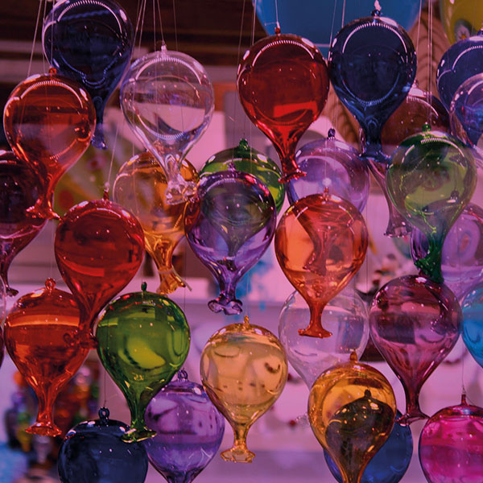

Historia
Vidrieria artesanal
Con la llegada de la Edad Media, y gracias al comercio, los venecianos aprenden los secretos de su fabricación, que habían sido transmitidos de generación en generación. Todos los artesanos del vidrio se concentran en la isla de Murano, intentando así que no se extienda su conocimiento. Pero el conocimiento no tiene fronteras y la técnica del vidrio llega a Alemania y Bohemia, desde donde se expande al resto del mundo.Durante la Edad Media, el vidrio se convierte en un artículo de lujo, sólo al alcance de la nobleza, la burguesía y el alto clero de la epoca. En la historia, la vidriería ha comprendido diversos oficios, desde la simple creación de objetos de vidrio hasta la elaboración de complejas obras de arte. Algunos oficios históricos de vidriería incluyen la fabricación de envases, la creación de cristales para ventanas y puertas, la elaboración de vitrales, la producción de objetos ornamentales y crear vidrio soplado.
Fabricadores de envases
Maestros vidrieros
Vidrieros sopladores
Talladores de vidrio
Cristaleros
Tipos de vidrios
- Vidrio Liso.
- Vidrio de un solo color.
- Vidrio Reamy: Colores transparentes que dan gran movimiento al vidrio.
- Vidrio Veteado: Vidrio de dos o más colores que le dan efecto de acuarela.
- Vidrio Sedy: Transparente o de colores muy suaves con burbujas de aire en su interior.
- Vidrio Craquelado: Vidrio soplado enfriado rapidamente para romper y crear fragmentos.
- Vidrio Chupado: Capa fina de vidrio sobre cristal transparente o color base.
- Vidrio “antitanque”: Endurecido fuera del horno lo cual permite que sea liso y brillante.
- Vidrio “Laminado a Lámina”: Vidrio fundido extendido con rodillos sobre una superficie plana, es económico y existe una extensa gama tipos.
- Vidrio “Laminado a mano”: Fabricado por pequeñas empresas que laminan a mano, cada pieza es única y especial.
- Vidrio Perlas y “nuggets”: Fragmentos de vidrio de función decorativa. Se emplean para joyas y las “perlas” se fabrican girando vidrio fundido dentro de pequeños círculos.